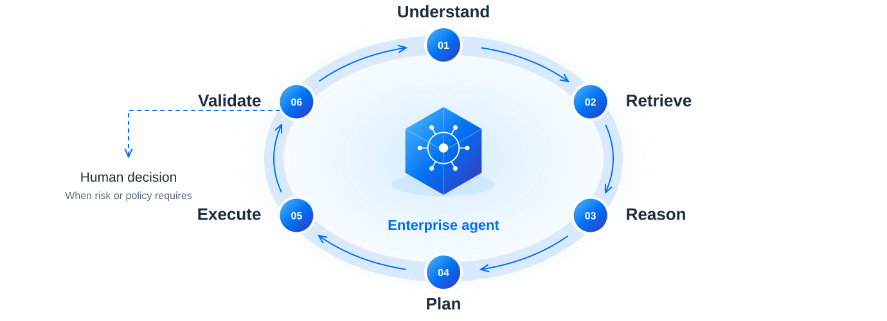

SAP BTP AI
07 · AGENTIC EXECUTION LOOP
Reason. Act. Validate. Repeat with control.
An agent works toward an outcome through a continuous execution loop.

Continue when the result is valid. Escalate on risk, low confidence or policy.
07 · AGENTIC EXECUTION LOOP
An agent works toward an outcome through a continuous execution loop.

Continue when the result is valid. Escalate on risk, low confidence or policy.